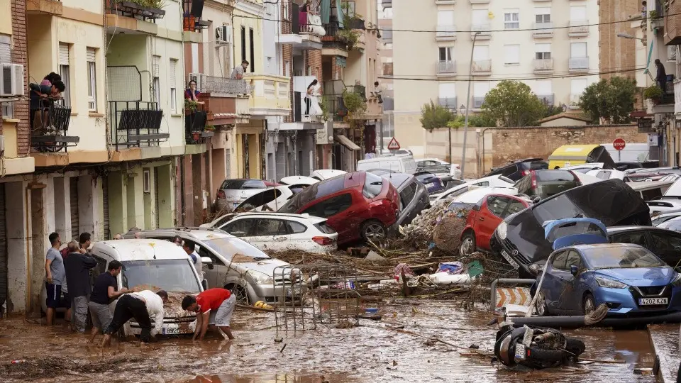
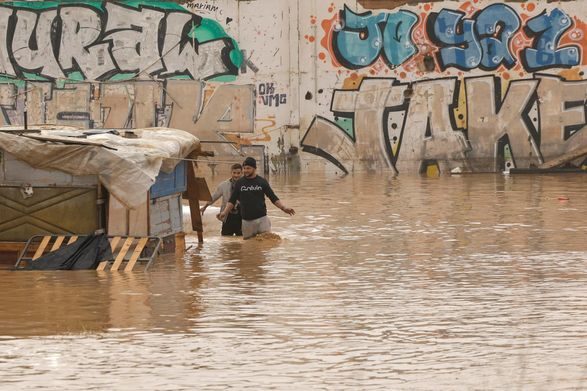
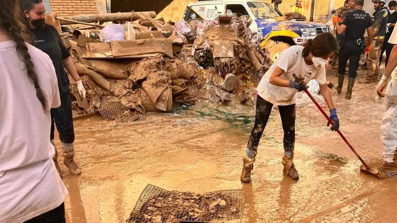

Home
Prima
Durante
Dopo

ALLUVIONE VALENCIA 2024
CRONACA DI UNA TRAGEDIA
"Fotografie significative dell'alluvione"
PRIMA
Informazioni
VALENCIA SOMMERSA
"In poche ore, l’acqua ha cancellato ciò che anni avevano costruito"

DURANTE
Informazioni
DAL FANGO ALLA RINASCITA
"Una tragedia che unì una città"

DOPO
Informazioni